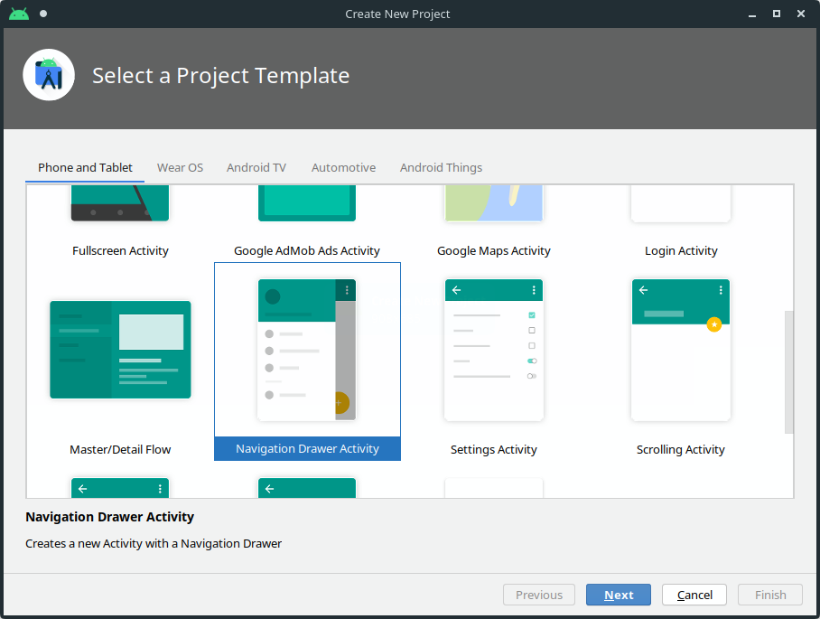
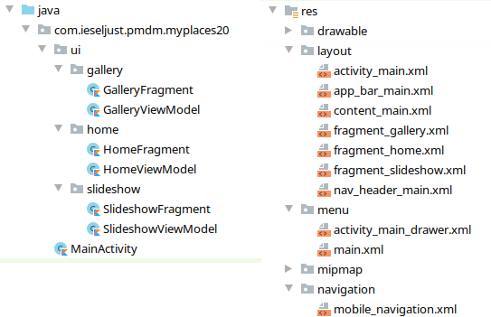
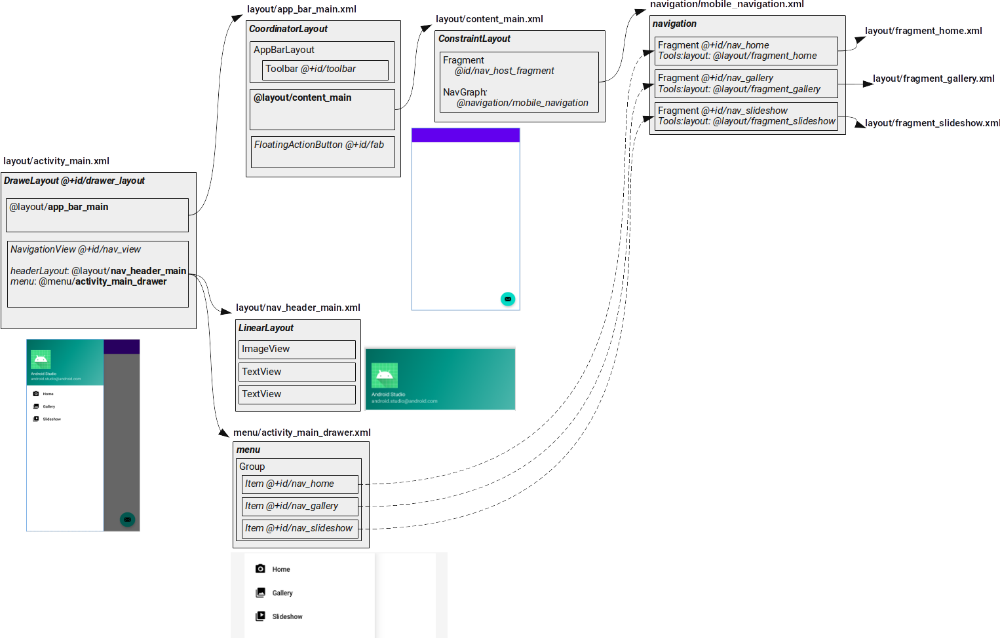
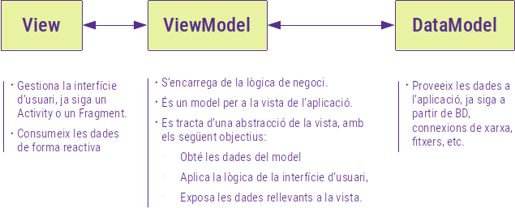
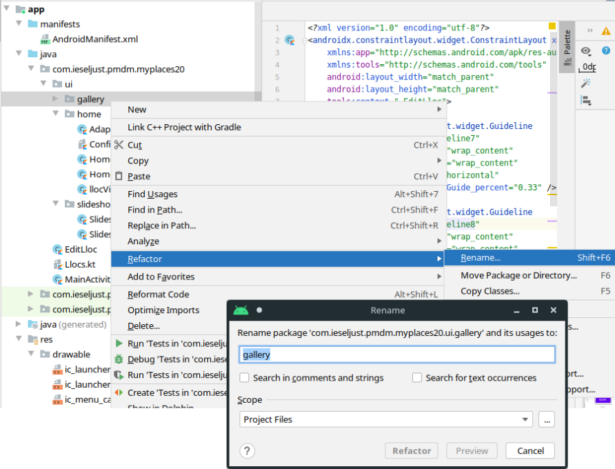
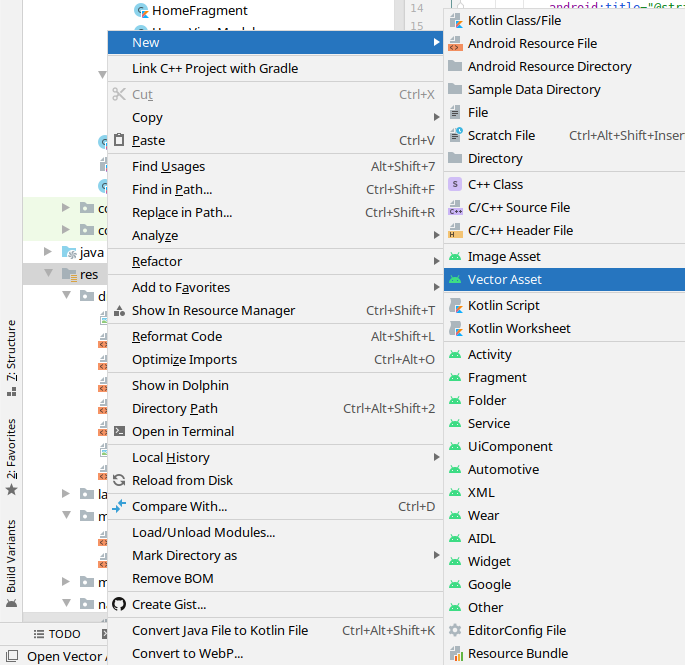
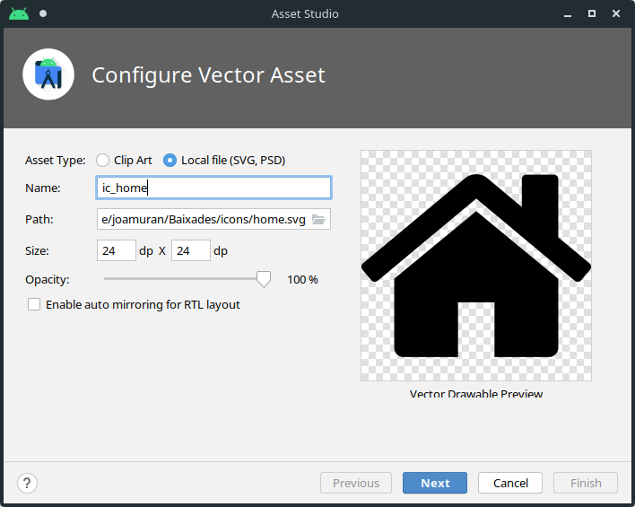
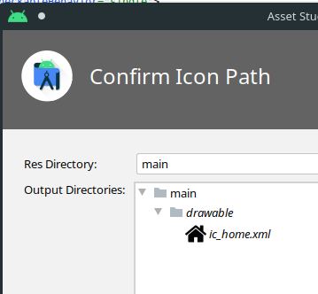
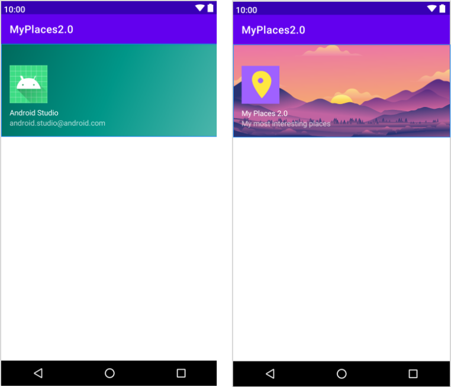
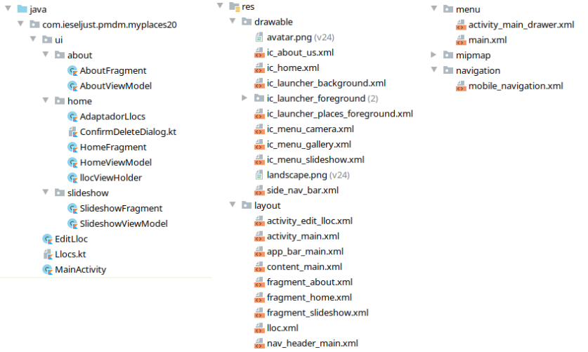

7. Ampliació de l'aplicació MyPlaces. Navigation Drawer, Fragments, MVVM, View Binding.
En aquesta unitat anem a donar-li un enfoc més pràctic als continguts que ens queden d’Android, i per a això anem a reprendre l’aplicació MyPlaces (DamLlocs) que ja coneixeu i a partir d’ella fer una versió 2.0 amb més funcionalitat. Aprofitarem parts del codi i algunes activitats d’aquesta, però partirem d’un projecte nou.
1. Creació del projecte
Crearem un projecte nou, partint de la plantilla Navigation Drawer Activity, i li posarem per nom MyPlaces2. Aquesta plantilla ja ens crea una estructura de projecte predeterminada que girarà al voltant d’un element de tipus Navigation Drawer.
El Navigation Drawer és un element d’interfície definit per Material Design i que consisteix en un menú lateral lliscant que serveix com a principal element de navegació, i que és accessible bé a través d’un botó a la barra de l’aplicació o bé lliscant el contingut de la pantalla des de la vore esquerra.

Si donem un cop d’ull al resultat d’aplicar aquesta plantilla veurem que ens crea una estructura bastant completa:

Com podem comprovar, ens genera diversos recursos de tipus layout, un parell de tipus menú i un de tipus navigation. A més, a banda de la classe MainActivity, tenim altres classes de tipus Fragment i Model, organitzades dins una carpeta ui.
En estos moments, ja podem llançar l’aplicació per tal de vore quin és el seu funcionament general.
Anem a analitzar aquesta organització de recursos, fent ús del següent esquema on s’aprecia la relació entre aquests i el seu aspecte.

Partim del disseny de l’activitat principal activity_main.xml (DrawerLayout), que es compon principalment de dos elements:
- El contingut de l’activitat, incorporat amb un include i fent referència al recurs layout/app_bar_main, definit al fitxer layout/app_bar_main.xml.
- El component NavigationView, que conté una capçalera (recurs @layout/nav_header_main; fitxer layout/nav_header_main.xml) i un menú @menu/activity_main_drawer (fitxer menu/activity_main_drawer.xml).
El fitxer app_bar_main.xml, conté les diferents pantalles de què es compon l’aplicació, però a diferència d’altres projecte que hem vist, ho fa en forma de fragments en lloc d'Activitats. Els fragments són components en què podem dividir la interfície d’usuari, de manera que puguem combinar-los per generar una única activitat, permetent-nos així la reutilització i una millor millor organització del codi.
Aquest fitxer app_bar_main.xml defineix doncs l’aspecte general de les pantalles amb contingut de la nostra activitat, i defineix una barra d’aplicació (AppBarLayout), el contingut (@layout_content_main), i un botó flotant.
El Layout content_main (fitxer layout/content_main.xml), conté un fragment que referencia a un recurs de tipus NavGraph. Aquests recursos són col·leccions de nodes accessibles a través d’un ID. Al nostre cas, aquest fa referència al recurs navigation/mobile_navigation.xml, que inclou tres fragments en tres documents diferents: @layout/fragment_home, @layout/fragment_gallery, @layout/fragment_slideshow.
Pel que fa als menús, podem veure que al recurs menu/activity_main_drawer.xml, tenim definit un grup amb tres items, que fan referència, justament als tres fragments del recurs Navigation que tenim a dalt. A més, si ens fixem en la imatge anterior, on véiem la distribució dels fitxers de codi font, recordem que disposàvem d’una carpeta ui dins el paquet. Fixeu-vos que el codi font d’aquestes carpetes el que fa és gestionar cadascun d’aquests fragments.
Com podem vore, es tracta d’una plantilla que parteix d’una mena de galería d’imatges, amb una pàgina inicial, la galería i un Slideshow.
A partir d’aquesta plantilla inicial, podem afegir modificacions o nous elements per tal de generar la funcionalitat que busquem.
Per exemple, què fariem si…
- Volguèrem modificar el disseny de la capçalera del menú? Doncs modificaríem el fitxer layout/nav_headeR_main.xml per afegir una nova imatge al component ImageView i modificant els recursos d’String corresponents als dos TextViews.
- Volguérem eliminar alguna opció de les que hi ha al menú (per exemple, l’SlideShow)? Hauriem d’eliminar el fragment corresponent, eliminant el fitxer layout/fragment_slideshow.xml i l’element Fragment del recurs navigation/mobile_navigation.xml que fa referència a aquest Slideshow. També eliminariem la corresponent entrada al recurs de menú menu/activity_main_drawer.xml, així com la subcarpeta de fonts ui/slideshow.
- Volguérem afegir una entrada nova? Doncs caldria crear un nou fitxer layout/fragment_nou.xml*, afegir el *Fragment* al recurs *navigation/mobile_navigation.xml* i afegir l’entrada al recurs de menú *menu/activity_main_drawer.xml*. A més, afegiriem la funicionalitat dins una nova carpeta dins la carpeta *ui* del nostre paquet.
- I per readaptar l’estructura creada a un projecte diferent? En aquest cas, podem renomenar i refactoritzar els components ja creats per tal que s’adapten al què necessitem.
Documentació oficial sobre Fragments i NavGraph
2. Adaptant MyPlaces/DamLlocs a l’estructura de MyPlaces 2.0
Anem a partir ara del codi generat per a l’aplicació DamLlocs, i adaptar-lo a aquesta estructura. Per a això, incorporarem a l’estructura de navegació la pantalla amb la llista de llocs i la pantalla d'About. Recordem que l’activitat per afegir nous llocs i modificar un lloc no s’incloïa en el menú, pel que la mantindrem separada.
Les diferents adaptacions que farem seran les següents:
- Reutilització de la pantalla
layout/fragment_homeper emmagatzemar la llista de llocs. Aquesta serà la pantalla principal, que recordem, estarà guardada com un fragment dins l’estructura de navegació que tenim enllaçada a l’activitat principal (busqueu a l’esquema general on es troba el fragment_home i com s’arriba a ell des de l'activity_main). - Refactorització de la pantalla
layout/fragment_galleryperlayout/fragment_about, per afegir informació sobre l’aplicació. En aquest cas, partirem de l’activitat d’About que teníem, però afegint alguna informació més. - Modificar el Navigation Drawer per personalitzar la capçalera i les opcions de menú corresponents. Ací aprendrem també a afegir nous recursos de tipus imatge.
- Incorporar l’activitat d’edició de llocs per editar i afegir llocs nous. Aquesta activitat serà independent del Navigation Drawer, i accedirem a ella també a través de diferents Intents, bé siguen per afegir nous llocs o modificar els existents.
3. Adaptació de la llista de llocs
En aquest apartat anem a veure com adaptar a la nova estructura la pantalla amb el RecyclerView dels diferents llocs. Tindrem dos dificultats: per una banda, passar d’una activitat a un fragment, i per altra banda, entendre el model MVVM en què es basa aquesta plantilla.
Per tot açò, anem a anar seguint els següents passos, i anirem introduïnt conceptesa mesura que ens facen falta:
-
Creem al nou projecte el fitxer font
Llocs.kt(fem click sobre el nom del paquet amb el botó dret i seleccionem New > Kotlin Class/File). Ens crearà un fitxer buit, amb la línia de definició del package. En aquest fitxer, copiarem directament (sense la definició del package) el contingut del fitxer Llocs.kt del nostre projecte inicial DAMLlocs. Si no el vàreu aconseguir implementar del tot, heu de fer-ho ara!. -
Modificarem el fitxer d’interfície
layout/fragment_home, eliminant el component TextView que conté, i copiem a dins el component RecyclerView que teníem a la nostra implementació inicial. Ens quedarà el següent:
<?xml version="1.0" encoding="utf-8"?>
<androidx.constraintlayout.widget.ConstraintLayout
xmlns:android="http://schemas.android.com/apk/res/android"
xmlns:app="http://schemas.android.com/apk/res-auto"
xmlns:tools="http://schemas.android.com/tools"
android:layout_width="match_parent"
android:layout_height="match_parent"
tools:context=".ui.home.HomeFragment">
<androidx.recyclerview.widget.RecyclerView
android:id="@+id/RVLlocs"
android:layout_width="match_parent"
android:layout_height="match_parent"
tools:layout_editor_absoluteX="148dp"
tools:layout_editor_absoluteY="108dp" />
</androidx.constraintlayout.widget.ConstraintLayout>
- Afegim un nou recurs de tipus layout per al ViewHolder, que anomenarem
lloc.xmli que tindrà, de moment, el mateix contingut que al projecte DAMLLocs original:
<?xml version="1.0" encoding="utf-8"?>
<LinearLayout
xmlns:android="http://schemas.android.com/apk/res/android"
android:layout_width="match_parent"
android:layout_height="96dp"
android:orientation="vertical">
<TextView
android:id="@+id/nomLloc"
android:layout_width="match_parent"
android:layout_height="0dp"
android:layout_weight="2"
android:gravity="center_vertical"
android:text=""
android:textColor="@color/black"
android:textSize="24sp" />
<TextView
android:id="@+id/descLloc"
android:layout_width="match_parent"
android:layout_height="wrap_content"
android:layout_weight="1"
android:gravity="top"
android:text="" />
</LinearLayout>
-
Afegim dos nous fitxers fonts de kotlin dins la subcarpeta home: AdaptadorLlocs.kt i LlocViewHolder.kt. Com que utilitzarem recursos que hi ha al paquet de base, caldrà fer un
import com.ieschabas.pmdm.myplaces20.*, ja que el paquet on estem ubicant aquestes funcions éscom.ieschabas.pmdm.myplaces20.ui.home. De moment, no cal modificar res d’aquestes classes. -
Finalment anem a abordar el fitxer
HomeFragment.kt, per a la qual cosa necessitarem introduir primer alguns conceptes nous sobre arquitectures i patrons de disseny d’aplicacions mòbils, tal i com veurem al següent apartat.
3.1. El model MVVM
Les arquitectures o models de disseny ens permeten organitzar l’estructura, el funcionament i la interacció entre les diferents parts d’una aplicació.
En el món de la programació mòbil s’han popularitzat tres models de disseny:
- El model MVC o Model-Vista-Controlador, que va ser la solució inicial per separar la interfície d’usuari de la lògica de negoci, i que introduïa tres components principals: El Model, que era el responsable de la gestió de les dades (ja fos a través de fitxers, bases de dades o dades remotes), la Vista, que representa la interfície d’usuari, i el Controlador, que és qui conté la lògica de negoci, des de la gestió d’events fins al canvi de vistes o accés a les dades. La vista i el controlador depenen del model, i es defineixen al mateix lloc, ja siga una activitat o un fragment.
- El model MVP o Model-Vista-Presentador que alleugera la càrrega de l’activitat o fragment on es defineixen, extraien la tasca que feia el controlador a una nova entitat anomenada Presenter, que serà l’encarregat d’organtizar i coordinar tot el que va succeïnt entre el model i la vista.
- I finalment, el model que ens aborda és el model MVVM o model Model-Vista-ViewModel. En aquest model, la Vista segueix l'activitat o fragment responsable de la visualització de les dades, però ho fa d’una forma més reactiva o automatitzada. El responsable d’açò és el component ViewModel que prepararà les dades observables per a la Vista a partir del Model. El principal avantatge és que els canvis són reactius, és a dir, la interfície es modifica com a reaccció als canvis en el ViewModel, de forma automàtica i també el ViewModel reacciona als canvis a la interfície modificant aquest, tot en temps real.
Gràficament, podem vore aquest model MVVM de la següent manera:

Tenint en ment aquest model, anem a analitzar els fitxer HomeFragment.kt i el seu corresponent ViewModel HomeViewModel.kt.
Si ens fixem al codi generat automàticament per al HomeFragment, observarem el següent:
- Es tracta d’una classe descendent de
Fragment,
class HomeFragment : Fragment() {
...
}
- Declara un atribut
homeViewModel, de tipusHomeViewModel(és a dir, el ViewModel que gestionarà aquest fragment), i que és privada i d'inicialitzacació tadana (lateinit). Recordem que quan una variable és d’un tipus que no accepta null, requereix que s’inicialitze al constructor. En alguns casos, aquestes variables necessiten inicialitzar-se posteriorment, com per exemple, quan la inicialització es fa a partir d’una injecció de dependències. El fet de marcar la propietat com a lateint ens serveix per resoldre aquestes situacions, indicant que la inicialització de la variable es farà de forma posterior a aquesta declaració.
private lateinit var homeViewModel: HomeViewModel
- I finalment, sobreescriu el mètode
onCreateViewdel Fragment, que captura l’event de creació de la vista, i vindria a ser equiparable al mètodeonCreatede les Activities. La seua tasca en capturar aquest event serà preparar la vista per a la seua presentació.
override fun onCreateView(
inflater: LayoutInflater,
container: ViewGroup?,
savedInstanceState: Bundle?
): View? {
homeViewModel = ViewModelProvider(this).get(HomeViewModel::class.java)
val root = inflater.inflate(R.layout.fragment_home, container, false)
val textView: TextView = root.findViewById(R.id.text_home)
homeViewModel.text.observe(viewLifecycleOwner, Observer {
textView.text = it
})
return root
}
Com veiem, aquest mètode rep un inflatter, per instanciar un recurs de tipus layout en format XML als seus objectes de vista corresponents, un container, que és el ViewGroup on s’ubica el fragment, i un objecte de tipus Bundle. El seu valor de retorn serà l’objecte de tipus View associat a l’arrel del Layout.
Internament, aquest mètode onCreateView, en primer lloc, instancia el corresponent ViewModel, i després, instancia el fitxer de Layout fragment_home.xml mitjançat l'inflatter. El resultat d’aquesta instanciació serà l’arrel de la vista que estem creant.
Finalment, estableix un observador per al TextView que inicialment contenía el Layout, però que hem eliminat per reemplaçar-lo pel nostre RecyclerView.
Si ens fixem ara en el HomeViewModel, veiem primer que res que aquest és una extensió de ViewModel:
class HomeViewModel : ViewModel() {...}
Els ViewModels són classes dissenyades per tal d’emmagatzemar i administrar dades relacionades amb la interfície d’usuari, de forma conscient al cicle de vida, amb el que es permet que les dades sobrevisquen als canvis de configuració (com per exemple una rotació de pantalla). Aquests ViewModels no es destrueixen quan hi ha un canvi de configuració. Quan es destrueix una vista i se’n crea una de nova, la nova vista es reconnecta al ViewModel existent. A més, aquests ViewModels s’encarreguen de comunicar-se amb els repositoris de dades, ja siguen accessos a bases de dades, fitxers o consultes a una API.
Tornant al HomeViewModel, veiem com aquesta defineix l’atribut _text de la següent manera:
private val _text = MutableLiveData<String>().apply {
value = "This is home Fragment"
}
val text: LiveData<String> = _text
}
Aquest objecte es defineix com MutableLiveData<String>. Els LiveData són objectes observables, que envíen als observadors els canvis que es produeixen, de forma reaciva, sense tocar la interfície d’usuari. Aquests LiveData també tenen en consideració el cicle de vida, de manera que només s’actualitzen les dades quan l’activitat és a la patalla. Si es produeixen canvis a les dades, aquestes s’actualitzaran al ViewModel quan es mostre el fragment a la pantalla.
Tornem a analitzar el codi del mètode onCreateView de HomeFragment. En primer lloc, estableix el seu ViewModel com a:
homeViewModel = ViewModelProvider(this).get(HomeViewModel::class.java)
Amb açò, fa ús de la classe ViewModelProvider (androidx.lifecycle.ViewModelProvider) per inicialitzar el homeViewModel a partir de la classe HomeViewModel (fixeu-vos que una, en minúscula és un atribut de la classe HomeFragment, mentre que en majúscula és la classe de tipus ViewModel que defineix aquest).
Posteriorment, després d'unflar la vista i inicialitzar el TextView a l’element corresponent de la interfície, fa el següent codi:
homeViewModel.text.observe(viewLifecycleOwner, Observer {
textView.text = it
})
return root
Aquest homeViewModel.text és la propietat text del ViewModel que hem definit com a LiveData, pel que és una propietat observable. Amb això, podem utilitzar aquest mètode .observeamb el que subscrivim el textView.text de la interfície a l’atribut text que tenim al homeViewModel.
En aquest punt, cal fer una xicoteta observació respecte a l’accés als elements de la interfície. Fixeu-vos que no estem utilitzant els Synthetics de les extensions de Kotlin, sinò que en el seu lloc, s’utilitzen, de moment els findViewById. Aquestes extensions han estat deprecades a la versió 1.4.20-M2, per diversos motius. Veurem més avant quines són les alternatives que s’han proposat per reemplaçar-les.
Documentació Addicional
Videotutorials
3.2. Divisió de funcionalitat entre la vista i el ViewModel
Al projecte DAMLlocs original, l’activitat principal gestionava tant la interfície com la part de gestió del negoci, accedint directament a l’objecte Llocs, que faría de model en una estructura típica MVC.
Ara, amb una arquitectura MVVC, cal dividir la funcionalitat que hi teníem en aquesta classe principal i decidir què gestionarà la vista (el fragment) i què el ViewModel. En principi, la vista només s’hauria d’encarregar de la gestió de la interfície d’usuari (el component RecyclerView) i el ViewModel la lògica de l’aplicació.
Tenint en compte açò, una distribució més o menys lògica passaria per:
- La classe HomeFragment, que gestiona la vista serà qui s’encarregue del RecyclerView RVLlocs i establirà el seu disseny (Layout Manager),
- La classe HomeViewModel serà qui gestione la lògica de la pantalla, encarregant-se de la gestió de l’adaptador (AdaptadorLlocs) lligat al RecyclerView,
- La classe HomeViewModel, a més, definirà l'Adaptador com un LiveData, de manera que des de la classe homeFragment es puguen establir observadors per actualitzar la interfície quan es modifique l’adaptador,
- La gestió dels events serà gestionada entre les dues classes. Si recordem, els events es detectàven a la classe llocViewHolder, és a dir, en cada entrada individual del RecyclerView, i féiem ús de funcions de callback per tal d’especificar què fer des del ViewHolder quan es detectava l’event. En aquest cas, a més, tenim la dificultat afegida de que per obrir una nova activitat (com editar un lloc), hem de llançar les Intents des del fragment, però qui crea l’adaptador no és el fragment sinò el ViewModel. El que caldrà fer en aquest cas serà:
- Definir dos atributs MutableLiveData a la HomeViewModel que contindran un objecte de tipus Lloc, i que seran observades des de la classe HomeFragment, aquests atributs s’anomenaran llocClicked i llocLongClicked (compte que abans els callbacks rebien aquest nom)
- Crearem dos funcions de callback que passarem en la creació de l’adaptador, i que anomenarem llocClickedManager i llocLongClickedManager, i que únicament establiran el valor de llocClicked i llocLongClicked amb el lloc sobre el que s’haja fet clic al ViewHolder,
- A la classe HomeFragment establirem dos observadors per a cadascuna d’aquestes variables, de manera que quan prenguen valor, el que farem serà ressetejar-les (per a següents usos), i realitzar, ara sí, les accions corresponents, com puguen ser mostrar el diàleg de confirmació de l’esborrat o llançar una Intent per obrir altra activitat.
Veiem amb tot açò com quedaria més o menys el codi d’aquestes dues classes:
- Classe HomeFragment:
package com.ieschabas.pmdm.myplaces20.ui.home
import ...
class HomeFragment : Fragment() {
// Definim una instància del ViewModel com a lateint
private lateinit var homeViewModel: HomeViewModel
// Mètode que es llança quan s'ha de crear la vista
// Aquesta es crearà a partir de l'XML i es retornarà en
// l'element root.
override fun onCreateView(
inflater: LayoutInflater,
container: ViewGroup?,
savedInstanceState: Bundle?
): View? {
// Instanciem el homeViewModel fent ús de ViewModelProvider
homeViewModel = ViewModelProvider(this).get(HomeViewModel::class.java)
// I instanciem els elements de la interfície, a través de l'inflater:
// - El primer paràmetre d'inflate és el recurs XML
// - El segon paràmetre és un el contenidor dins el qual s'instancia l'XML
// - El tercer paràmetre indica si la vista s'ha d'incloure immediatament
// al contenidor o no. Com que estem en un fragment i aquesta vista l'anem
// a retornar, cal indicar "false*
val root = inflater.inflate(R.layout.fragment_home, container, false)
// Localitzem el RecyclerView R.id.RVLlocs a la interfície
// (recordeu que root conté la vista)
val RVLlocs: RecyclerView = root.findViewById(R.id.RVLlocs)
// Assignem un Layout Manager al nostre RecyclerView
// Cal especificar el context actual, ja que no reconeix this
RVLlocs.layoutManager= LinearLayoutManager(context)
// Creem un Observer i el subscrivim al LiveData "adaptador" definit
// al homeViewModel. Quan es produisquen canvis en aquest, es veuran
// reflexats a l'adaptador del RecyclerView RVLlocs.
homeViewModel.adaptador.observe(viewLifecycleOwner, Observer {
RVLlocs.adapter = it
})
// Creem altre Observer i el subscrivim als canvis que es produïsquen
// en l'objecte llocClicked del homeViewModel. En aquest cas, per crear
// l'observer es rep el lloc sobre el que s'ha fet clic.
homeViewModel.llocClicked.observe(viewLifecycleOwner, Observer { lloc ->
lloc?.let {
// Resetegem el valor de llocClicked per tal que no
// estiga disponible per a futurs canvis
homeViewModel.llocClicked.value = null
// I creem una Intent per modifica el lloc sobre el que s'ha
// fet clic.
val intent = Intent(context, EditLloc::class.java)
intent.putExtra("nom", lloc.nom);
intent.putExtra("desc", lloc.descripcio);
intent.putExtra("tel", lloc.telefon);
intent.putExtra("web", lloc.web);
startActivity(intent)
}
})
// Creem un tercer Observer i el subscrivim als canvis que es produïsquen
// en l'objecte llocLongClicked del homeViewModel, igual que dalt.
homeViewModel.llocLongClicked.observe(viewLifecycleOwner, Observer { lloc ->
lloc?.let {
// Ressetegem el valor
homeViewModel.llocLongClicked.value = null
// I llancem l'acció corresponent al clic llarg, en aquest cas
// mostar el diàleg de confirmació per eliminar l'element clicat.
// En aquest cas, el mètode de callback que passem al diàleg per eliminar
// el lloc, serà un mètode anomenat removeLloc que definirem al ViewModel,
// ja que des de la vista no podem accedir directament al model, i hem de
// passar pel ViewModel per interactuar amb aquest.
val elMeuDialegModal = confirmDeleteDialog (lloc.nom, { homeViewModel.removeLloc(lloc) })
elMeuDialegModal.show(this.parentFragmentManager, "confirmDialog")
}
})
// I finalment, retornem l'element root que conté la vista
// amb tota la funcionalitat que hem incorporat.
return root
}
}
- Classe HomeViewModel:
class HomeViewModel : ViewModel() {
// Definim les funcions de callback per a la gestió d'events
// L'event el gestionarà el HomeFragment, però serà avisat
// pel ViewModel de quan es produeixen els clicks en cada element.
// Tant llocClicked com llocLongClicked seran definits com
// LiveData, de manea que puguen ser observables per un
// observador al fragment.
private fun llocClickedManager(lloc: Lloc, v: View){
// Per establir el valor del liveData utilitzem value
llocClicked.value=lloc
}
private fun llocLongClickedManager(lloc:Lloc, v: View) {
// Per establir el valor del liveData utilitzem value
llocLongClicked.value=lloc
}
// LiveData per a l'adaptador: L'adaptador del RecyclerView
// també serà un LiveData per tal de ser observable des de la vista.
private val _adaptador = MutableLiveData<AdaptadorLlocs>().apply{
// Amb value (setValue) establim el valor que tindrà el MutableLiveData
// de tipus AdaptadorLlocs. Aci passarem també els callbacks que
// s'han d'invocar quan es produisquen els clicks.
value=AdaptadorLlocs(
{lloc:Lloc, v: View -> llocClickedManager(lloc, v)},
{ lloc: Lloc, v: View -> llocLongClickedManager(lloc, v)}
)
}
// Aquesta és la propietat que es podrà llegir des de la vista
// (_adapter és privada)
val adaptador:MutableLiveData<AdaptadorLlocs> =_adaptador
// Mètode per eliminar un lloc de la llista de llocs
// Es modificarà el model, i s'avisarà l'adaptador per
// indicar que s'ha eliminat un element i es refresque.
fun removeLloc(lloc:Lloc){
Llocs.remove(lloc)
adaptador.value?.notifyDataSetChanged()
}
// Livedata per gestionar els clics
var llocLongClicked = MutableLiveData<Lloc?>()
var llocClicked = MutableLiveData<Lloc?>()
}
La resta de classes per gestionar el RecyclerView (classes AdaptadorLlocs, llocViewHolder, Llocs i ConfirmDeleteDialog) seran, com ja hem comentat, exactament iguals que en el cas de DAMLlocs.
Documentació oficial sobre Layout Inflater i LiveData
4. Activitat EditLloc
L’activitat EditLloc tindrà, de moment, la mateixa funcionalitat que a l’exercici de DAMLlocs, i ens servirà tant per modificar un lloc existent, com per a crear un lloc nou. Cal remarcar que es tracta d’una activitat independent, no d’un fragment accessible des del menú.
Podem crear directament l’activitat i reemplaça el codi, o copiar-la per parts: per una banda el fitxer XML del layout (layout/activity_edit_lloc.xml) i per altra la classe EditLloc. A més, no oblidem que caldrà registrar l’activitat al fitxer de Manifest amb:
<activity android:name=".EditLloc"></activity>)
Quan copiem el codi de la interfície, veurem com ens marca error amb les referències als identificadors (android:id="@+id/guidelineXX", etc.). L’Android Studio ens suggerirà l’opció per crear automàticament estos recursos (Create id value resource).
L’únic id que no podem crear directament és el de la imatge: app:srcCompat="@drawable/landscape", que fa referència al fitxer landscape.png dels recursos Drawable. Amb que copiem la imatge amb aquest nom dins la carpeta Drawable (arrossegant-lo directament), aquest error desapareix.
Pel que fa a la classe, haurem de canviar, evidentment el nom del package, i a més, anem a eliminar les referències als Synthetics de les extensions de Kotlin. Ho veurem al següent apartat.
4.1. View Binding per reemplaçar els Synthetics
Com hem comentat més amunt, a les versions més recents de Kotlin s’han eliminat les extensions i amb elles els synthetic que utilitzàvem per fer referència directament als elements del Layout a través de propietats d’extensió.
Així doncs, caldrà utilitzar el findViewById com hem fet anteriorment, o bé buscar alguna alternativa que reemplace aquesta funcionalitat. Una d’aquestes alternatives és la lligadura de vistes o View Binding.
Abans que res, si hem copiat el codi de la nostra classe EditLloc, haurem d’eliminar l’import de les extensions de Kotlin:
import kotlinx.android.synthetic.main.activity_edit_lloc.*
Ara caldrà activat el View Binding. Per a això, caldra indicar al fitxer build.gradle el següent:
android {
...
buildFeatures {
viewBinding = true
}
}
I ara, per utilitzar-ho en la classe cal modificar la forma en que instanciem l’XML. En lloc d’invocar setContentView amb l’identificador del layout, ho farem passant-li la vista instanciada prèviament amb View Binding.
És a dir, en el mètode onCreate de l’activitat:
override fun onCreate(savedInstanceState: Bundle?) {
super.onCreate(savedInstanceState)
setContentView(R.layout.activity_edit_lloc)
...
}
Modificarem la última línia per les següents:
override fun onCreate(savedInstanceState: Bundle?) {
super.onCreate(savedInstanceState)
val binding = ActivityEditLlocBinding.inflate(layoutInflater)
setContentView(binding.root)
. . .
}
Amb aquest ActivityEditLlocBinding veurem que l’Android Studio ens demana afegir l’import següent:
import com.ieschabas.pmdm.myplaces20.databinding.ActivityEditLlocBinding.
I per accedir a les propietats ho farem a través d’aquesta variable binding, de manera que, on abans feiem coses com:
editTextNom.setText(nom)
Ara caldrà fer:
binding.editTextNom.setText(nom)
Una vegada tenim esta activitat llesta, ja podem veure funcionar la Intent del clic en la llista de llocs. Ens quedarà, com veurem d’aci un parell d’apartats afegir codi al botó per afegir un lloc nou.
Informació Addicional sobre el ViewBinding i la supressió dels Synthetics a les extensions de Kotlin
5. Afegint la pantalla d’About
El següent que anem a fer és incorporar el que en la versió anterior era l’Activitat About com a un nou fragment, accessible des del menú general.
Per a això, anem a reutilitzar el fragment de la galeria, renomenant les diferents classes i interfícies que conté.
Els passos a realitzar seran els següents:
- Canviem el nom a la carpeta gallery. Fem clic sobre ella amb el botó dret i seleccionem Refactor > Rename, i en el diàleg reemplaçarem gallery per about:

Fem el mateix amb la classe GalleryFragment que passarà a ser AboutFragment, GalleryViewModel que passarà a ser AboutViewModel i el Layout fragment_gallery que passarà a anomenar-se fragment_about.
Una vegada canviats els noms, editarem el layout i el reemplaçarem pel següent codi, basat en l’About de la versió anterior, però amb alguna opció de més:
<?xml version="1.0" encoding="utf-8"?>
<androidx.constraintlayout.widget.ConstraintLayout xmlns:android="http://schemas.android.com/apk/res/android"
xmlns:app="http://schemas.android.com/apk/res-auto"
xmlns:tools="http://schemas.android.com/tools"
android:layout_width="match_parent"
android:layout_height="match_parent"
tools:context=".About">
<androidx.constraintlayout.widget.Guideline
android:id="@+id/guideline"
android:layout_width="wrap_content"
android:layout_height="wrap_content"
android:orientation="vertical"
app:layout_constraintGuide_percent="0.30" />
<androidx.constraintlayout.widget.Guideline
android:id="@+id/guideline2"
android:layout_width="wrap_content"
android:layout_height="wrap_content"
android:orientation="vertical"
app:layout_constraintGuide_percent="0.70" />
<androidx.constraintlayout.widget.Guideline
android:id="@+id/guideline3"
android:layout_width="wrap_content"
android:layout_height="wrap_content"
android:orientation="horizontal"
app:layout_constraintGuide_percent="0.10" />
<androidx.constraintlayout.widget.Guideline
android:id="@+id/guideline4"
android:layout_width="wrap_content"
android:layout_height="wrap_content"
android:orientation="horizontal"
app:layout_constraintGuide_percent="0.40" />
<androidx.constraintlayout.widget.Guideline
android:id="@+id/guideline5"
android:layout_width="wrap_content"
android:layout_height="wrap_content"
android:orientation="horizontal"
app:layout_constraintGuide_percent="0.50" />
<androidx.constraintlayout.widget.Guideline
android:id="@+id/guideline6"
android:layout_width="wrap_content"
android:layout_height="wrap_content"
android:orientation="horizontal"
app:layout_constraintGuide_percent="0.60" />
<androidx.constraintlayout.widget.Guideline
android:id="@+id/guideline7"
android:layout_width="wrap_content"
android:layout_height="wrap_content"
android:orientation="horizontal"
app:layout_constraintGuide_percent="0.70" />
<androidx.constraintlayout.widget.Guideline
android:id="@+id/guideline8"
android:layout_width="wrap_content"
android:layout_height="wrap_content"
android:orientation="horizontal"
app:layout_constraintGuide_percent="0.80" />
<androidx.constraintlayout.widget.Guideline
android:id="@+id/guideline9"
android:layout_width="wrap_content"
android:layout_height="wrap_content"
android:orientation="horizontal"
app:layout_constraintGuide_percent="0.90" />
<ImageView
android:id="@+id/aboutImg"
android:layout_width="0dp"
android:layout_height="0dp"
app:layout_constraintBottom_toTopOf="@+id/guideline4"
app:layout_constraintEnd_toStartOf="@+id/guideline2"
app:layout_constraintHorizontal_bias="1.0"
app:layout_constraintStart_toStartOf="@+id/guideline"
app:layout_constraintTop_toTopOf="@+id/guideline3"
app:layout_constraintVertical_bias="1.0"
app:srcCompat="@drawable/avatar" />
<TextView
android:id="@+id/aboutTextView"
android:layout_width="wrap_content"
android:layout_height="wrap_content"
android:text="@string/About"
app:layout_constraintBottom_toTopOf="@+id/guideline5"
app:layout_constraintEnd_toStartOf="@+id/guideline2"
app:layout_constraintStart_toStartOf="@+id/guideline"
app:layout_constraintTop_toTopOf="@+id/guideline4"
app:layout_constraintVertical_bias="0.97" />
<TextView
android:id="@+id/aboutMaintainer"
android:layout_width="wrap_content"
android:layout_height="wrap_content"
android:text="@string/MaintaindedBy"
app:layout_constraintBottom_toTopOf="@+id/guideline6"
app:layout_constraintEnd_toStartOf="@+id/guideline2"
app:layout_constraintStart_toStartOf="@+id/guideline"
app:layout_constraintTop_toTopOf="@+id/guideline5"
app:layout_constraintVertical_bias="0.97" />
<TextView
android:id="@+id/nomAlumne"
android:layout_width="wrap_content"
android:layout_height="wrap_content"
android:text="@string/nomAlumne"
android:textColor="@color/black"
android:textSize="24sp"
app:layout_constraintBottom_toTopOf="@+id/guideline7"
app:layout_constraintEnd_toStartOf="@+id/guideline2"
app:layout_constraintStart_toStartOf="@+id/guideline"
app:layout_constraintTop_toTopOf="@+id/guideline6" />
<TextView
android:id="@+id/aboutVersionText"
android:layout_width="wrap_content"
android:layout_height="wrap_content"
android:text="@string/aboutVersion"
app:layout_constraintBottom_toTopOf="@+id/guideline8"
app:layout_constraintEnd_toStartOf="@+id/guideline2"
app:layout_constraintStart_toStartOf="@+id/guideline"
app:layout_constraintTop_toTopOf="@+id/guideline7"
app:layout_constraintVertical_bias="0.97" />
<TextView
android:id="@+id/aboutVersion"
android:layout_width="wrap_content"
android:layout_height="wrap_content"
android:text=""
android:textColor="@color/black"
android:textSize="24sp"
app:layout_constraintBottom_toTopOf="@+id/guideline9"
app:layout_constraintEnd_toStartOf="@+id/guideline2"
app:layout_constraintStart_toStartOf="@+id/guideline"
app:layout_constraintTop_toTopOf="@+id/guideline8" />
</androidx.constraintlayout.widget.ConstraintLayout>
Com veiem, hem afegit algunes guíes més, i algun que altre TextView addicional. En aquest punt, haureu de crear els recursos de tipus String que no tingueu definits.
Ara modifiquem l'AboutFragment i l'AboutViewModel per tal que inicialitzen i observen els textViews corresponents a l’autor/mantenidor (com ja teniem) i a la versió de l’aplicació, que hem afegit com a novetat en esta pantalla.
Veiem com queda cadascun:
- classe AboutViewModel
package com.ieschabas.pmdm.myplaces20.ui.about
import androidx.lifecycle.LiveData
import androidx.lifecycle.MutableLiveData
import androidx.lifecycle.ViewModel
class AboutViewModel : ViewModel() {
// Definim els valors privats _maintainer i _currentVersion,
// com a MutableLiveData, així com les propietats observables
// equivalents maintainer i _currentVersions
private val _maintainer = MutableLiveData<String>().apply {
value = "@Alumne"
}
val maintainer: LiveData<String> = _maintainer
private val _currentVersion = MutableLiveData<String>().apply {
value = "2.0"
}
val currentVersion: LiveData<String> = _currentVersion
}
- Classe AboutFragment
package com.ieschabas.pmdm.myplaces20.ui.about
import ...
class AboutFragment : Fragment() {
// Declarem el ViewModel per a la seua
// inicialització posterior
private lateinit var aboutViewModel: AboutViewModel
// I definim el mètode que ens tornarà la vista quan
// aquesta s'ha de crear
override fun onCreateView(
inflater: LayoutInflater,
container: ViewGroup?,
savedInstanceState: Bundle?
): View? {
// Inicialitzem aci el ViewModel a través de ViewModelProvider
// I instanciem l'XML al contenidor
aboutViewModel =
ViewModelProvider(this).get(AboutViewModel::class.java)
val root = inflater.inflate(R.layout.fragment_about, container, false)
// Definim els observers per actualitzar automàticament els TextViews
// (encara que aquests no es modificaran en temps d'exexució)
val maintainerTextView: TextView = root.findViewById(R.id.nomAlumne)
aboutViewModel.maintainer.observe(viewLifecycleOwner, Observer {
maintainerTextView.text = it
})
val versionTextView: TextView = root.findViewById(R.id.aboutVersion)
aboutViewModel.currentVersion.observe(viewLifecycleOwner, Observer {
versionTextView.text = it
})
// I finalment retornem la vista
return root
}
}
6. Afegint nous llocs
Anteriorment hem vist com modificar un lloc del RecyclerView llançant una Intent sobre l’activitat EditLloc. Ara ens queda afegir un lloc nou mitjançant la icona flotant que tenim a l’activitat principal.
Per a això, abans que res, editarem el fitxer de recurs layout/app_bar_main.xml per modificar la icona del botó flotant. Localitzem l’etiqueta del FloatingActionButton:
<com.google.android.material.floatingactionbutton.FloatingActionButton
android:id="@+id/fab"
android:layout_width="wrap_content"
android:layout_height="wrap_content"
android:layout_gravity="bottom|end"
android:layout_margin="@dimen/fab_margin"
app:srcCompat="@android:drawable/ic_dialog_email" />
I modifiquem el valor d'app:srcCompat per @android:drawable/ic_menu_add, de l'stock d’icones d’Android.
Ara ens quedarà afegir el codi a l’activitat principal per obrir l’activitat d’edició per afegir un lloc nou. Per a això només haurem de localitzar a la classe MainActivity el codi per gestionar el clic sobre aquesta icona:
val fab: FloatingActionButton = findViewById(R.id.fab)
fab.setOnClickListener { view ->
Snackbar.make(view, "Replace with your own action", Snackbar.LENGTH_LONG)
.setAction("Action", null).show()
}
I en lloc de mostrar un Snackbar, crearem una Intent per iniciar l’activitat d’editar lloc.
val fab: FloatingActionButton = findViewById(R.id.fab)
fab.setOnClickListener { view ->
val intent = Intent(this, EditLloc::class.java)
startActivity(intent)
/*Snackbar.make(view, "Replace with your own action", Snackbar.LENGTH_LONG)
.setAction("Action", null).show()*/
}
Com que no li passem cap valor, aquesta activitat d’edició de llocs ja interpreta que anem a afegir un nou element, pel que amb això ja hauriem finalitzat l’adaptació de l’aplicació completa.
7. Personalitzant el menu
Una vegada ja tenim la funcionalitat migrada del projecte inicial a la nova estructura, només ens queda realitzar els canvis corresponents al menú.
Per a això caldrà modificar el recurs menu/activity_main_drawer.xml. Però abans, anem a importar les icones que utilitzarem per al menú, que de moment en seran dos. Podeu descarregar icones en format vectorial (svg) des d’Internet (per exemple des de https://www.flaticon.com/) o fins i tot dissenyar-les vosaltres.
Per tal d’importar les icones, en la vista d'Android fem clic sobre els recursos amb el botó dret i busquem l’opció New > Vector Asset:

La finestra que ens apareix tindrà el següent aspecte, i en ella, seleccionarem el vector que hajam descarregat i li direm que el volem amb una grandària de 24dpx24dp. En la finestra següent, indicarem que es guarde en la ruta per defecte main > drawable > ic_home.xml


Realitzarem el mateix procediment per a la icona de l’entrada About.
Finalment, només ens queda referenciar a aquestes icones en el fitxer de menú i modificar els IDs i els recursos de tipus String per a que mostren Home i About. També comentarem de moment la última entrada que no anem a utilitzar:
<?xml version="1.0" encoding="utf-8"?>
<menu xmlns:android="http://schemas.android.com/apk/res/android"
xmlns:tools="http://schemas.android.com/tools"
tools:showIn="navigation_view">
<group android:checkableBehavior="single">
<item
android:id="@+id/nav_home"
android:icon="@drawable/ic_home"
android:title="@string/menu_home" />
<item
android:id="@+id/nav_about"
android:icon="@drawable/ic_about_us"
android:title="@string/About" />
<!--item
android:id="@+id/nav_slideshow"
android:icon="@drawable/ic_menu_slideshow"
android:title="@string/menu_slideshow" /-->
</group>
</menu>
A més,cal tindre en compte que en aquest cas, hem modificat l’identificador del menú, pel que caldrà realitzar els canvis corresponents al fragment del recurs navigation/mobile_navigation.xml (Podeu tornar a donar una ullada a l’esquema on es mostren tots els components per veure-ho més clar). Així doncs, modificarem el segon fragment del mobile_navigation.xml amb:
<fragment
android:id="@+id/nav_about"
android:name="com.ieschabas.pmdm.myplaces20.ui.about.AboutFragment"
android:label="About"
tools:layout="@layout/fragment_about" />
I també modificarem l’activitat principal, reemplaçant el recurs R.id.nav_gallery de la línia:
appBarConfiguration = AppBarConfiguration(setOf(
R.id.nav_home, R.id.nav_gallery, R.id.nav_slideshow), drawerLayout)
pel recurs R.id.nav_about que hem creat:
appBarConfiguration = AppBarConfiguration(setOf(
R.id.nav_home, R.id.nav_about, R.id.nav_slideshow), drawerLayout)
Només ens queda un últim detall. Modificar el recurs layout/nav_header_main per personalitzar la portada del menú. Si editem el recurs, veurem que es tracta d’un LinearLayout, amb una icona i dos TextViews.
Per tal de modificar-ne el fons, caldrà canviar la propietat android:background del LinearLayout:
android:background="@drawable/side_nav_bar"
Per exemple per:
android:background="@drawable/landscape"
Ara, per modificar-ne la icona farem ús de l'Image Assitant Studio i utilitzarem una imatge de l’stock . Per a això fem click amb el botó dret sobre els recursos i seleccionem New > Image Assistant, i seguim els passos indicats en la documentació oficial:
- Deixem el camp Icon Type com a Launcher Icons (Adaptive & Legacy), i canviem el nom si no el volem sobreescriure(per exemple ic_launcher_places)
- En Foreground Layer (primer pla, referent a la imatge de la icona) seleccionem l'Asset Type de tipus Clip Art per especificar una imatge del conjunt d’icones de Material Design, i busquem una icona relacionada amb l’aplicació (Per exemple places). Podem modificar el color i escalar-la com desitgem.
- A la pestanya de Background Layer (capa amb el fons) en Asset Type podem triar entre un color de fons o una imatge.
- I ja en la pestanya d'Options comprovem que tot estiga correcte, i confirmem si volem generar icones heretades, redones i de la Google Play Store.
- Per acabar, farem clic Next per passar a la pantalla de configuració següent, on se’ns informarà de tots els recursos que van a generar-se, així com si aquests ja existien i els volem sobreescriure. Farem click en Finish per confirmar-ho tot.
Amb això ja podem modificar la icona reemplaçant a l'ImageView la línia:
app:srcCompat="@mipmap/ic_launcher_round" />
Pel nou recurs:
app:srcCompat="@mipmap/ic_launcher_places_round" />
I per modificar el contingut dels dos TextViews, el que farem serà modificar els recursos d’Strings, per canviar el valor de @string/nav_header_title i @string/nav_header_subtitle, amb el nom de l’aplicació i un subtítol.

Documentació oficial sobre l’Image Assistant
https://developer.android.com/studio/write/image-asset-studio
8. Conclussions i consideracions finals
En aquest document hem vist com adaptar l’estructura d’un projecte basat en activitats a un Navigation Drawer basat en fragments i seguint el model Model-Vista-ViewModel. També hem vist com eliminar les dependències dels deprecats synthetic de les extensions de Kotlin per a Android i reemplaçar-les pel View Binding, així com editar les nostres icones per a les aplicacions.
Tot i que funcionalment no hem guanyat massa respecte a l’aplicació de DAMLlocs que vam desenvolupar anteriorment, hem sentat les bases de molts conceptes i paradigmes nous, i hem establert la base d’una aplicació sobre la que anem a treballar posteriorment per conéixer noves funcionalitats d’Android.
Per tal de verificar el projecte, si hem anat seguint tota l’explicació anterior, l’estructura de carpetes i fitxers d’aquest, deu ser semblant a la següent:
